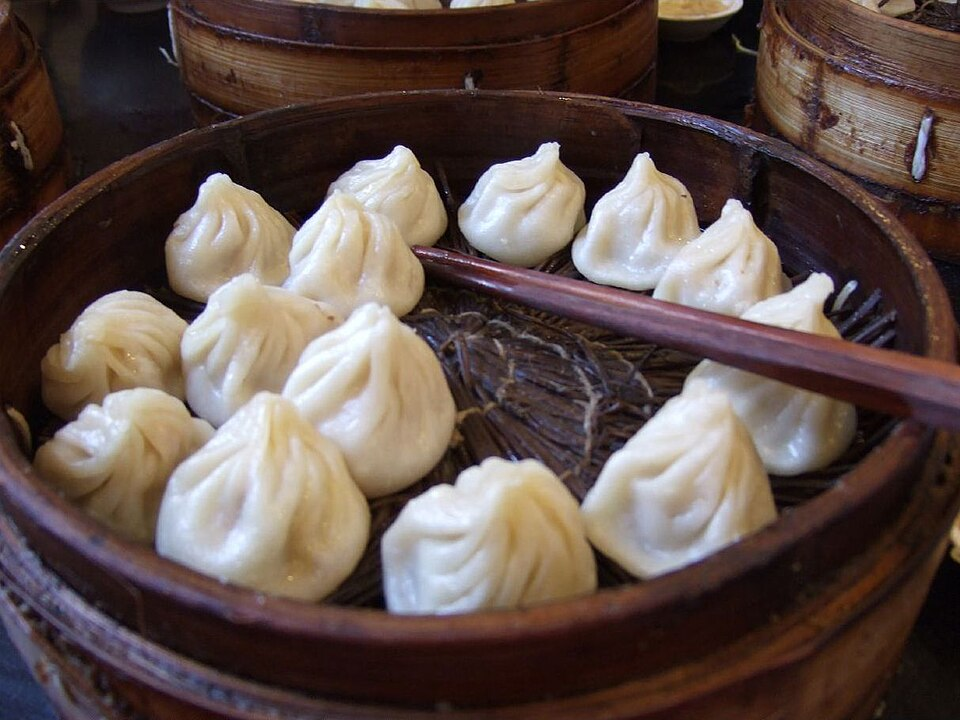
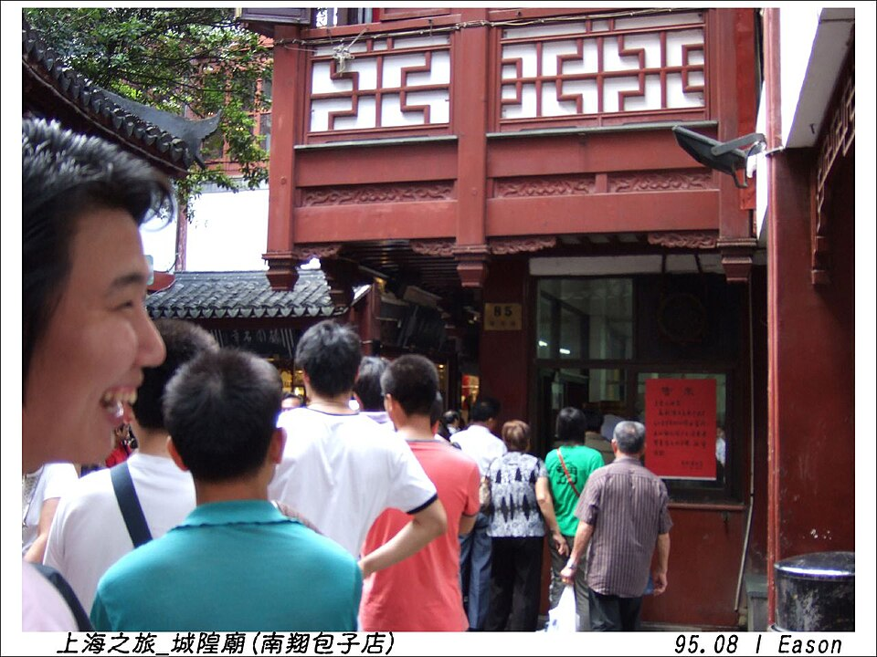
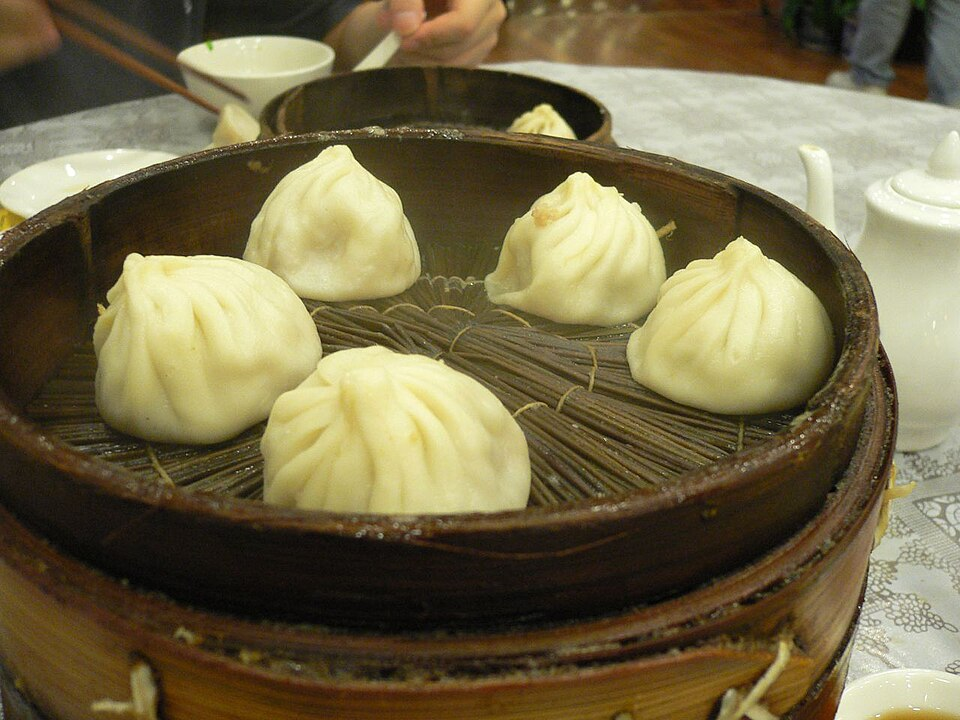
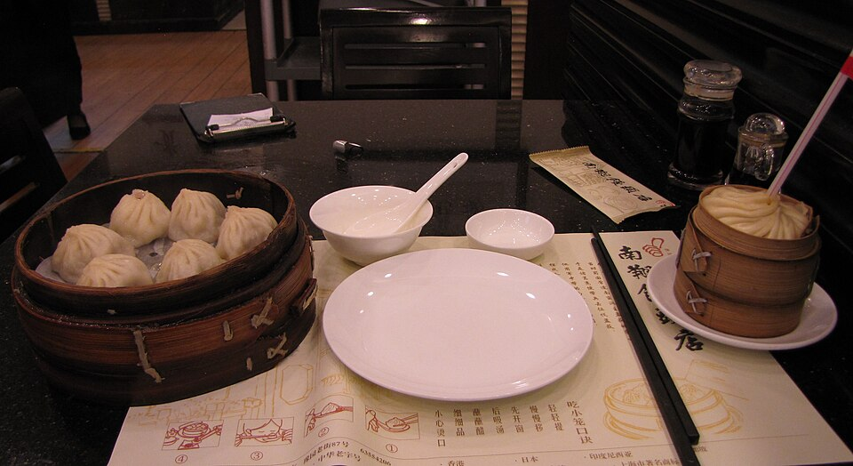

2Обед: сяолунбао в Nanxiang
南翔馒头店 · Пельмени с бульоном внутри, рядом с садом
В плане: ★ Вариант 1












Сяолунбао - маленькие пельмени с бульоном внутри, их готовят на пару в бамбуковых корзинках. Считается, что они родом из Шанхая, шанхайский вариант называют Nanxiang.
Nanxiang Mantou Dian - известная пельменная на базаре у Yu Garden. По путеводителю 2026 года очередь к окну на вынос 45-60 мин, лучше прийти пораньше. Залы наверху дороже: на верхнем этаже около 200-500 ¥ на человека.
| Очередь | 45-60 мин к окну на вынос (путеводитель 2026) |
|---|---|
| На месте | 40-60 мин |
Источник: путеводитель wanderinchina.com (2026); о сяолунбао - Wikipedia. Часы работы я не проверял. Проверено 27.10.2026 02:36 по Шанхаю.
Как добраться
- 3 мин пешком от Yu Garden.
Рядом

1. Yu Garden и старый городКлассический китайский сад 1559 года, вокруг старый город

3. Набережная BundБанки и конторы 1920-30-х вдоль реки
Фото: Wikimedia Commons, автор и лицензия под каждым. Пешие отрезки и такси: OSRM. ← ко всему плану